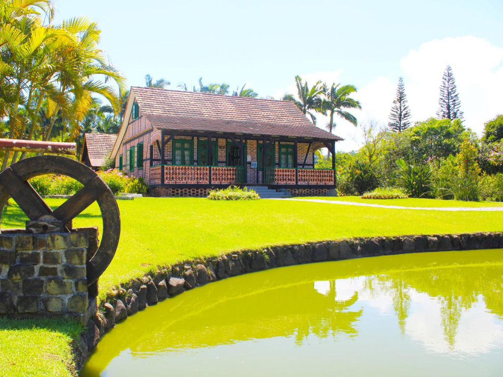

Santa Catarina é o estado mais equilibrado do Sul, com praias paradisíacas em Florianópolis, montanhas nevadas em São Joaquim e cidades de forte herança europeia como Blumenau e Joinville. É considerado um dos melhores estados para se viver no Brasil, com ótimos índices de desenvolvimento humano.
